|
|
|
Швейцарские Альпы. 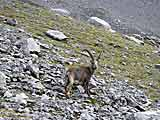 Вроде прошли восхищения. Надоело уже удивляться всяким замечательным бякам буржуев. А чего, собственно, ожидать от страны, основное достижение которой – работа в сфере финансов? Ну, ещё дырки в сыре ковырять научились. Но не о дырках сейчас. С чего начать? С хорошего или не очень? Уговорили, с плохого.
Народ, ледники Альп тают! Со страшной скоростью. Сравнивал фото – тысячи
тонн льда как корова языком. 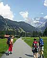 А теперь о "вкусном". Как, по-вашему, что такое прогулка по горам, по которым ходят не одну сотню лет? Ходят зачем, говорите? Возможно, когда-то ходили охотиться на очень симпатичных козерогов (национальная гордость!), скотинку всякую с пастбища на пастбище перегоняли, ради "спортивного" интереса – снег летом пощупать, а теперь прибавьте к этому технический прогресс и бешеное развитие всего, что связанно с холодом и снегом. Что получаем в итоге: куда можно, поднимаемся фуникулёром, куда нельзя – ногами. Дальше топаем по прекрасной тропе, ориентируемся по знакам и маркировкам, а для ответственных мест есть подробная карта в рюкзаке. Ночёвка под крышей, в тепле, с ужином и завтраком. Картина полная? Нет? Тогда о том, что видел.Первая гора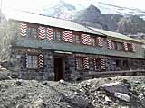 Первый фуникулёр быстро поднял до отметки 1652 м. Первая горная тропа живописно привела на высоту 2562 м – места ночёвки. А вот здесь немного остановимся. Строение из камня в три этажа носило имя Frundenhutte (Фрюнденхюттэ), приблизительный перевод – "Дом дружбы". Это не потому, что здесь такое интернациональное место и сюда все прут со всего необъятного земного шарика. Гора, на которую мы ходили, носит название Frundenhorn (Фрюнденхорн), вольный перевод "Рог дружбы" или "Дружеский рог", а может "Рог друга", фиг его знает, что имелось в виду. В Швейцарии основная масса вершин названа рогами. Так что на этом не особенно акцентируйте. Если бы здесь была Россия, об этом месте говорили бы: "Был на Дружбе. Ночевал под Дружбой". Но мы отвлеклись.Здание из трёх этажей – это спальня, столовая, раздевалка. Удобства все. Ужин, крепкий сон, оборванный включенным светом, завтрак, выход в 6:30. И вот, долгожданная гора! Даже не знаю, на чём остановиться. До вершины по вертикали
оставалось меньше километра, по горизонтали, если верить карте, полтора.
Хронология приблизительно такая: по леднику до горы от Хюттэ – 30 минут,
по горе до ледника на вершине – 1:30 минут, в кошках с ледорубом до вершины
– 2 часа. 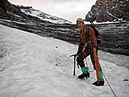 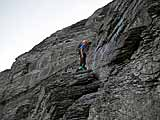 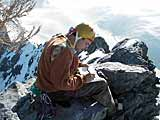 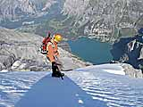 Быстрый перекусон с обозреванием красот с высоты, занесение
себя любимого в книгу на вершине (русских не нашёл) и вниз. 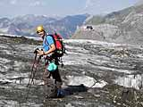 От вершины 3368 м назад до Хюттэ в обратной последовательности, только гораздо быстрее. В обед уже пили чай в столовой, а в 19 часов местного были дома.Что в итоге: дорога, фуникулёр, ужин, ночёвка, завтрак –
72 франка на человека. В рублях это, м-м-м, приблизительно – 1400 рублей
и одно попугайное крылышко! Но крылышко можно не считать. А насчёт Маттэрхорна поговорите со швейцарцем. Здесь это
что-то вроде мавзолея Ленина у нас, местным смешно, а туристы прут. В
хорошую погоду аж в очередь выстраиваются. А ведь один только выход на
гору 1200 франков, вынь да положь. Маттэрхорн – это как северное сияние
– им издалека любоваться надо. Вернёмся к нашим баранам. Вторая гораСценарий тот же, с небольшими лирическими отступлениями и новым финалом. Вот это было путешествие! Заход с севера, вершина, перевал, выход на юг. Да и километраж порядочный. Чтоб вас не утомлять – вкратце.
Ледник Trift. Впечатляющее зрелище. Вершина Diechterhorn. Высота 3389 м. Прекрасная панорама. Спуск. 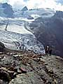 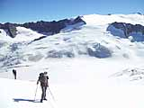 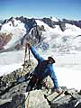 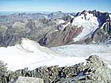 Выходили от вершины через перевал Diechterlimi на высоте 3215 м. Мерзкий южный спуск с ледника и дорога по каменюжнику до Gelmerhutte на высоту 2412 м. От него бегом до фуникулёра – времени в обрез. 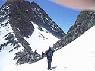 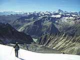 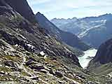 Фуникулёр. Очень крутой по перепаду высот фуникулёр спустил до 1340 м. Оттуда общественным транспортом. 20 часов местного – ужин дома. 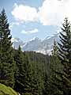 В итоге: по деньгам тоже самое, а впечатлений хоть лопатой разгребай. Может показаться, что ходили только там, где заночеватьс комфортом можно. Должен разочаровать, альпийская Швейцария усеяна сетью разнообразных Хюттэ, к которым протоптаны единственным логичным путём тропы, а где возможно, протянуты фуникулёры. Даже если попытаться убежать от цивилизации и найти место, где не видно домов и не слышно коров, самолёты всех мастей и спасательные вертолёты будут напоминать, что Швейцария – это цивилизация, а дикие вершины ищите в другом месте.
Алексей Пестов. Иркутск |